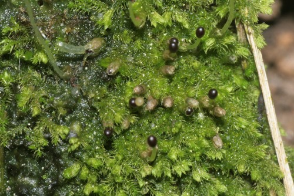

Pseudolepicoleaceae
No widely accepted common name
Pseudolepicoleaceae is a family of leafy liverworts (order Jungermanniales) characterized by having both lateral leaves and underleaves typically large and deeply divided into narrow segments, often appearing almost radially symmetrical (isophyllous or subisophyllous). Leaf insertion is usually transverse to slightly succubous.
Overview
The Pseudolepicoleaceae family comprises a group of leafy liverworts primarily found in the Southern Hemisphere, particularly in temperate and subantarctic regions, with some representation in the Northern Hemisphere and tropics. Key genera include Pseudolepicolea, Temnoma, and Archeophylla. These plants often grow in moist, shaded habitats on rocks, soil, logs, or sometimes as epiphytes, frequently forming turfs or mats.
A defining feature of the family is the tendency towards isophylly or subisophylly, where the underleaves are large and very similar in size and shape (deeply divided) to the lateral leaves, giving the shoots an almost radially symmetrical appearance. The lateral leaves are inserted transversely or slightly succubously. Both leaves and underleaves are typically deeply divided into 2-4 (or more) narrow, often hair-like or bristle-tipped lobes. This combination of features distinguishes them from families like Lepidoziaceae (which have incubous leaves and often different branching) and Herbertaceae (which also have divided leaves/underleaves but differ in other details).
Quick Facts
- Scientific Name: Pseudolepicoleaceae Fulford & J.Taylor
- Common Name: (None widely used)
- Number of Genera: Approx. 6-8 (including Pseudolepicolea, Temnoma, Archeophylla, Fulfordiella).
- Number of Species: Approximately 30-40 species.
- Distribution: Primarily Southern Hemisphere cool temperate and subantarctic regions, also bipolar and tropical montane occurrences.
- Evolutionary Group: Bryophytes - Liverworts (Marchantiophyta) - Jungermanniopsida - Jungermanniales.
Key Characteristics
Note: Pseudolepicoleaceae are leafy liverworts often appearing radially symmetrical due to large, divided leaves and underleaves.
Gametophyte (Leafy Shoot) Structure
The dominant phase is the leafy gametophyte:
- Form: Small to medium-sized plants, typically forming erect or ascending turfs or creeping mats. Often green, yellowish-brown, or reddish-brown.
- Stems: Relatively slender to moderately robust.
- Leaves: Arranged in two lateral rows, often somewhat spreading.
- Shape: Characteristically deeply divided, typically into (2-)4 or more narrow, lanceolate to subulate (awl-shaped) lobes, which may end in a sharp point or cilium.
- Insertion: Primarily transverse (straight across the stem) to slightly succubous.
- Cells: Often relatively small with thickened walls, sometimes strongly so.
- Underleaves: Critically important feature: typically present, large, and closely resembling the lateral leaves in size, shape, and degree of division (isophyllous or subisophyllous). Also deeply divided into narrow lobes.
- Branching: Variable, often predominantly intercalary (lateral or ventral), sometimes terminal (Frullania-type). Not typically showing the regular pinnate branching common in Lepidozia.
- Asexual Reproduction: Gemmae are known in some species, often produced on specialized structures or leaf tips.
Reproductive Structures
Species can be monoicous or dioicous.
- Antheridia: Male organs are borne in the axils of specialized saccate bracts (androecia), usually forming distinct spikes often terminal on branches or intercalary.
- Archegonia: Female organs are typically terminal on main shoots or long branches, surrounded by progressively larger bracts and bracteoles (modified leaves and underleaves) and a well-developed perianth. The perianth is usually large, inflated, cylindrical to fusiform, often strongly plicate (pleated) towards the apex, and the mouth is typically contracted and lobed or ciliate.
Sporophyte
The sporophyte develops within the perianth:
- Foot: Embedded in the stem apex tissue.
- Seta: Distinct, elongating considerably at maturity.
- Capsule: Ovoid to ellipsoid, typically dark. Capsule wall is multistratose.
- Dehiscence: Capsule splits longitudinally into four straight valves upon maturity.
Spores and Elaters
Contained within the capsule.
- Spores: Small to medium-sized, spherical, surface ornamentation variable (papillose, granular, etc.).
- Elaters: Present, typically long and slender with 2 spiral thickenings.
Field Identification
Identifying Pseudolepicoleaceae relies on recognizing the combination of deeply divided leaves and underleaves that are similar in size and shape, transverse/succubous insertion, and the terminal perianth.
Primary Identification Features
- Isophyllous/Subisophyllous Appearance: Underleaves are large and deeply divided, closely resembling the lateral leaves in form and size.
- Deeply Divided Leaves & Underleaves: Both lateral leaves and underleaves typically cut into (2-)4 or more narrow, often pointed or bristle-tipped lobes.
- Transverse to Slightly Succubous Leaf Insertion: Leaves attached straight across or slightly angled like upward-pointing shingles.
- Terminal Perianth: A large, often pleated perianth located at the tip of main shoots or long branches (not on short ventral branches like Lepidoziaceae).
Secondary Identification Features
- Habitat: Often on rocks, logs, or soil in humid temperate or montane regions, particularly Southern Hemisphere.
- Cell Walls: Often appear thickened under magnification.
- Branching Pattern: Not typically regularly pinnate like Lepidozia.
Seasonal Identification Tips
- Year-round: The distinctive vegetative symmetry (isophylly/subisophylly) and leaf division are key features visible year-round.
- Reproductive Periods: Look for the large, terminal perianths which can be conspicuous.
Common Confusion Points
Pseudolepicoleaceae might be confused with:
- Lepidoziaceae: Many genera also have divided leaves/underleaves, but Lepidoziaceae have distinctly incubous leaf insertion and typically bear perianths on short ventral branches. Branching is often regularly pinnate.
- Herbertaceae: Also have large, deeply divided leaves and underleaves, appearing somewhat isophyllous. However, Herbertus often has a different branching pattern, specific cell structures, and details of the reproductive structures differ. Leaf insertion may be different.
- Trichocoleaceae: Have highly divided leaves/underleaves but are distinctly 'hairy' or 'woolly' due to cells elongated into cilia, and possess a perigynium, not a perianth.
- Blepharostomataceae: Also have leaves/underleaves divided into cilia-like segments, but are typically much smaller, more delicate plants, and differ in perianth details.
- Ptilidiaceae: Have incubous leaves that are deeply lobed and heavily ciliate.
Key differentiator: The combination of transverse/slightly succubous insertion + large, deeply divided leaves AND underleaves that look similar + terminal perianth is characteristic of Pseudolepicoleaceae.
Field Guide Quick Reference
Look For:
- Leafy shoots, often appearing radially symmetric
- Leaves transversely/succubously inserted
- Leaves & Underleaves both large & deeply divided into narrow segments
- Large perianth terminal on shoots/branches
- Often S. Hemisphere / montane habitat
Key Distinctions:
- Leaf insertion not incubous (unlike Lepidoziaceae)
- Underleaves large & similar to leaves (isophyllous tendency)
- Perianth terminal (unlike ventral in Lepidoziaceae)
- Not 'hairy' (unlike Trichocoleaceae)
Notable Examples
Includes genera like Pseudolepicolea and Temnoma.

Pseudolepicolea species (e.g., P. quadrilaciniata)
(Pseudolepicolea)
Genus characterized by the typical family features: isophyllous/subisophyllous habit with leaves and underleaves deeply divided into 4 (or more) narrow lobes. Found in cool temperate regions, often on rocks or soil.

Temnoma species (e.g., T. pulchellum)
(Temnoma)
Another key genus, also showing deeply divided leaves and underleaves. Species vary in the number of lobes and degree of dissection. Found predominantly in the Southern Hemisphere on various substrates in moist habitats.
Phylogeny and Classification
Pseudolepicoleaceae is a family within the Jungermanniales whose exact phylogenetic placement has been debated. It is often associated with other families possessing deeply divided leaves and underleaves, such as Herbertaceae and Trichocoleaceae, or with Blepharostomataceae. Some classifications place it within a broadly defined suborder Jungermanniineae, while others suggest closer links to groups sometimes segregated as Trichocoleales. Molecular studies are helping to clarify these relationships, but Pseudolepicoleaceae appears to represent a distinct lineage characterized by its near-radial symmetry and specific reproductive features.
The tendency towards isophylly (equal development of leaves and underleaves) is a notable feature, contrasting with the strong differentiation seen in many other leafy liverwort groups. This suggests different evolutionary pressures or developmental pathways shaping the gametophyte structure in this family.
Position in Plant Phylogeny
- Kingdom: Plantae
- Division: Marchantiophyta (Liverworts)
- Class: Jungermanniopsida
- Order: Jungermanniales
- Family: Pseudolepicoleaceae
- (Subordinal placement complex/variable, potentially near Herbertaceae, Trichocoleaceae, Blepharostomataceae)
Evolutionary Significance
Pseudolepicoleaceae is significant for:
- Isophyllous Tendency: Demonstrates a trend towards radial symmetry in leafy liverworts, contrasting with the more common dorsiventral forms.
- Leaf Division Morphology: Showcases extreme division of leaves and underleaves into narrow segments.
- Phylogenetic Relationships: Its placement helps understand the complex relationships among basal or specialized lineages within the Jungermanniales.
- Biogeography: Its predominantly Southern Hemisphere distribution contributes to understanding Gondwanan floristic connections.